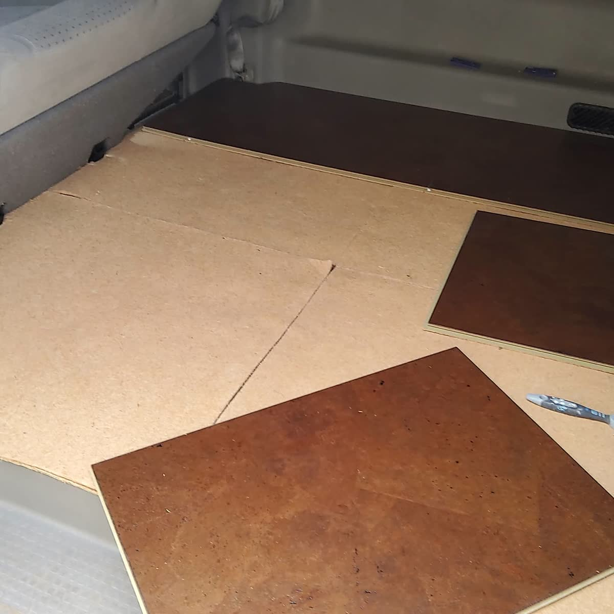
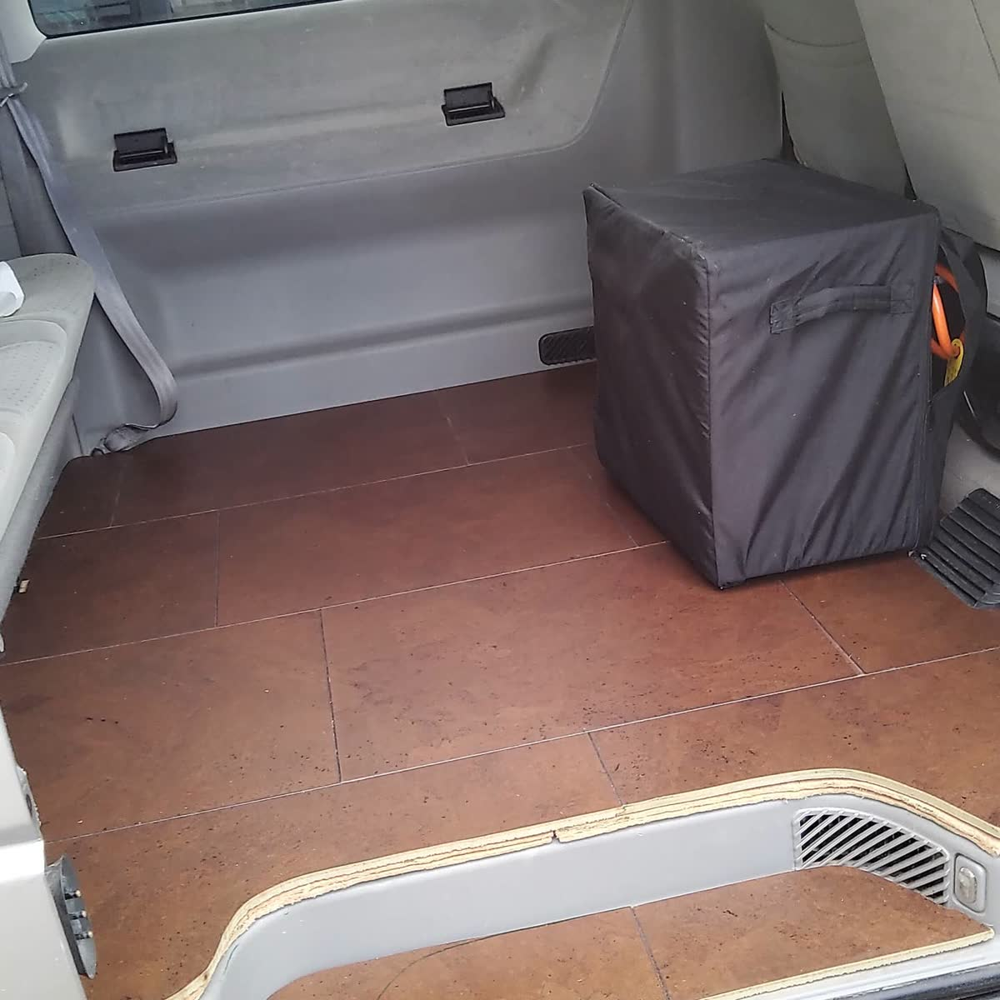

This is how I built the floor — my very first T4
Hello, this is Justine from Tussy Van! 💛 Today, I'll take you right at the beginning — to my very first T4, the silver VR6. My vanlife story began with him, and the first real major expansion step was the floor. Sounds unspectacular? But it's the foundation for everything that comes after — and honestly, the moment when a van slowly became my home.

A VW T4 Caravelle, built in 1998, with a VR6 engine and roof rack on top. From the outside, an inconspicuous silver bus — inside, a white sheet of paper just waiting to become my rolling home.
Step 1: Templates, templates, templates
The T4 floor is anything but a simple rectangular box: wheel arches, seat rails, sill edges, and the slanted rear section destroy any straight panel. My most important tip right at the start: Take your time with the templates. I worked with old newspapers and cardboard, laid them piece by piece on the floor, folded the edges, and traced the contours. This way, even the most crooked corners can be cleanly drawn onto the paper.

Step 2: Transfer and crop
I then transferred the cardboard stencils onto the click elements. Mark the outline, cut it out with the cutter or jigsaw, test on the real edge, match it. Better to adjust once or twice more than to give away an element.

Step 3: Work in segments
I am aware of the ground not laid in one piece, but in several segments. This has two advantages: you only get the elements into the car through the sliding door, and individual areas (e.g., above storage compartments or the battery) remain accessible. I worked neatly to the edge on the tailgate so nothing wobbles or stands up later.

Step 4: The centerpiece — cork click floor with insulation
Now comes my favorite detail — and the reason why this floor can do more than just look good: I installed a Cork click floor in walnut decor. It is somewhat thicker than a regular click base and has a additional cork layer as insulation. That's exactly what makes the difference: it retains more heat in the car and slows down the cold that would otherwise rise from below — in the T4, that's worth its weight in gold, especially on cool nights. And because cork is naturally warm and quiet, the floor feels comfortable even barefoot.
I moved the click elements directly onto the original car carpet — of course, thoroughly cleaned beforehand. This way, the carpet stays in, saves effort, and acts as an additional soft, insulating underlay. No tearing, no sticking — simply a clean, warm base for whatever comes later.

- Cardboard/newspaper stencils save you expensive cuts.
- Work in segments — fits through the door and remains accessible.
- Cork click floor with cork insulation = warmth from below, quiet and easy to care for.
- Laid on clean original carpet — saves effort and provides additional insulation.
I will soon add the specific product links (some advertising/affiliates) here.
This floor was the first step on a bus that carried me through countless adventures. You can read about the VR6's interior — water station, dry separation toilet, and electricity without solar — in "The T4 VR6 as an everyday camper".
See you soon and always have a good trip,
your Tussy 💛